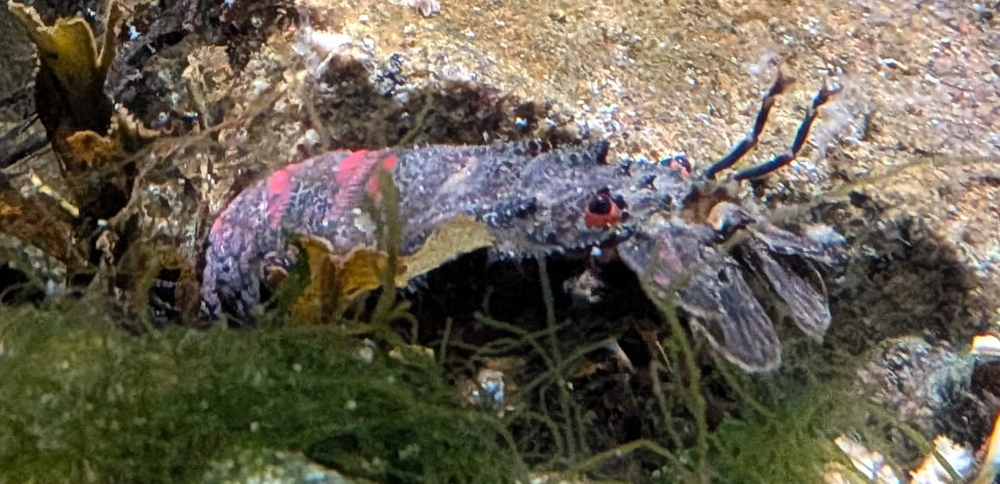

Petite cigale de mer
Scyllarus arctus
La petite cigale de mer est un crustacé marin facilement reconnaissable à son corps aplati, ses antennes élargies et son apparence rappelant celle d'une petite langouste.
Informations scientifiques
| Nom scientifique | Scyllarus arctus |
|---|---|
| Nom commun | Petite cigale de mer |
| Famille | Scyllaridae |
| Infra-ordre | Achelata |
| Ordre | Decapoda |
| Classe | Malacostraca |
| Habitat | Fonds rocheux et zones côtières |
| Répartition | Méditerranée et Atlantique Est |
| Longueur | Jusqu'à environ 16 cm |
| Alimentation | Mollusques, petits crustacés et autres invertébrés |
Description
La petite cigale de mer possède un corps aplati et une carapace
robuste. Ses antennes sont transformées en larges plaques qui lui
donnent une silhouette très caractéristique.
Elle vit principalement sur les fonds rocheux et peut se réfugier
dans les cavités et sous les pierres. Elle est active surtout la nuit
et recherche différents petits animaux benthiques pour se nourrir.
Contrairement aux homards, elle ne possède pas de
grandes pinces. Elle appartient néanmoins au même infra-ordre que les langoustes,
les Achelata.